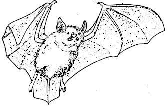
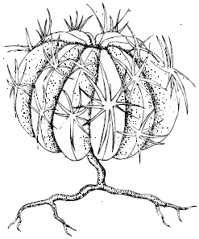
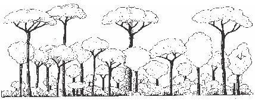

Organisms and their adaptation in a
terrestrial habitat.
Distribution of organisms in a terrestrial
habitat.
Background information
Various types of terrestrial habitat exist Terrestrial habitats
are recognized mainly by their vegetations which are
determined by rainfall and temperature. Terrestrial
habitats include: Marsh, Forest, grassland, and arid
land.
Marsh: This is a low land habitat featuring the growth of
grasses and shrubs and the presence of flood. A marsh can
be considered to be a habitat that exist in between as we
depart from aquatic to terrestrial habitat.
Characteristic of a marsh
Most of the time the land is flooded
Lowland
The soil is usually soft, wet and water logged
High relative humidity in the atmosphere
over the habitat.
Sometimes the water bodies contain decaying organic
matters, this affects oxygen content of the habitat and
also change its chemical composition.
Formation and Types of Marshes
Marshes can be formed by the following ways:
Overflowing of river banks during rainy season
coupled with the heavy rainfall makes them results
into a marsh habitat.
At hightide, sea water overflows into the lagoon and
may fill it to overflowing. The overflowing water
may eventually flood.. The surrounding low land
resulting to a marsh habitat.
Rivers also flow into lagoons as a result of rainfall
during rainy season. This addition of large volume of
river water to the lagoon can cause the overflowing
of the lagoon thus giving rise to a marsh habitat at
the surrounding or adjoining low land.
The partial filling up of a lake by debris. A marsh can
be either a salt water marsh or a fresh water marsh.
ORGANISMS FOUND IN A MARSH AND THEIR ADAPTIVE FEATURES
FEATURE
ORGANISMS
ADAPTIVE FEATURES
SALT WATER MARSH
Mangrove-crab, lagoon crab, hermit crab, mudskipper fish, oysters, barnacles, angel fish etc.
Features that tolerate salinity of the soil and water, also features to tolerate low oxygen condition.
FRESHWATER MARSHES
Algae, water lettuce, lemona, salvinia, various ferns, varieties of sword grass frogs, toads and fishes
Saprophytic organisms have feature that adapt to anaerobic conditions.
FOREST: A forest is a biome which consists mostly of trees. The main forest biomes include: Tropical rainforests,
temperate deciduous forests and the coniferous forests. In Nigeria the major type of forest is the rain forest. It is
influenced by rainfall, temperature and humidity which are abiotic factors.
CHARACTERISTICS OF THE RAINFOREST
Mesophyte mostly of tree species with broad leaves
Storeys or layers pattern of vegetation arrangement.
There use to be dim light on the forest floor due to foliage cover or canopy of trees.
Little vegetation at the forest floor
Presence of many climbing plants and epiphytes.
Five main vegetative layers or strata are identified in a rain forest
Ground floor layer of non-woody herbaceous plants, lichens, fungi, mosses and liverworts.
Lower layer which consists of various shade loving dwarf trees, shrubs and palms.
A middle layer of smaller trees which have elongated narrow crowns.
Upper layer which consists of tall trees with their crowns forming a continuous canopy or foliage
cover.
Emergent trees which occur at intervals high or above the canopy
ORGANISMS IN A RAIN FOREST AND THEIR ADAPTATIONS
ORGANISMS
ADAPTIVE FEATURES
PLANTS
Many types of trees such as mahogany, iroko, abura, cola etc, ferns, wild oil palm, Raphia, ginger, parasites like mistletoe and figs, Epiphytic orchids ferns, lichens, decomposer such as fungi are also found at the forest floor
Water retaining features. Well developed root system for attachment to the soil. Well developed strengthening tissues, adaptations for climbing in climbing plants such as the method of as twining, scrambling hooks or roots, adaptation for carrying out photosynthesis under dimlight by shade plants.
* Flying adaptations *Climbing adaptations such as presence of opposite fingers in monkeys, prehensible tails in chameleons, grasping pads in tree frogs etc. *Well developed sense of hearing among underground dwellers.
A GRASS LAND: Biome in which grasses are dominant is called grassland. Rainfall and temperature mostly determine
the vegetation of a grassland.
Characteristics of grassland
Rainfall ranges from moderate to low.
There use to be intense sunshine
During dry season, bush fire usually occur
The soil use to be sandy.
Types of grasslands
There is tropical grassland and also a temperate grassland
The tropical grassland is divided into: southern guinea savanna, Northern guinea savannah, sahel savanna and derived
savannah
Plants and animals distributions in a savanna and their adaptations
Plants
Adaptations
Mostly grasses but scarcity of trees, termites, rat, squirrels, deer, porcupines, gazelles, leopard, lions, cheetahs, grass cutters etc.
Presence of tick bark to reduce water loss and protect the plant from bush fires. Shedding of leaves during dry season to reduce transpiration. Underground stems in grasses helps them to survive dry seasons adaptation of the protoplasm of the organisms to recover after drying. Ability to regenerate new shoots after bush fires.
ARID LANDS
Lands where water is very scarce and difficult to obtain are called arid lands: it is the driest habitat that exist. Major arid
lands include: tropical deserts, warm temperate deserts and the arctic tundra.
Characteristics of a tropical desert
Scarcity of water (rainfall is scarce)
High temperature during the day and low temperature at night;
Rocky or sandy soil texture
Strong dry wind which erodes the land
There is intense sunshine due to little vegetation.
Characteristic of warm temperate desert
Winter temperature that is usually below freezing point with the exception of the southern
continents.
Scarcity of rainfall, which usually occurs in summer but fall every year.
Characteristic of Artic tundra
Summer is very short (about 3 month) with observable longer days.
Very low temperature of 100 c in summer.
Few centimeters part of soil is frozen
Muddy water logged soil is present
Winter is long, dark and is very cold below –150C
Organisms distribution in arid lands and their adaptations.
Organisms
Adaptations
Plants
Grasses, thorn shrubs, plants of cacti familyAloe
Plants Drought resisting annuals survive dryness in form of seeds which germinates after a down pour and complete its life circle before the water dries. The drought resisting suceulants withstand dryness by its water storage tissues, shallow widespread roots, reduced leaves, thick water proof cuticle and stomata that closes tightly.
Animals They rest in the day and become active at night in order to reduce water loss, structural adaptive features for burrowing e.g the sands lizard and enlarged claws of desert scorpions. Efficient water absorbing excretory system; protoplasms that can withstand extreme drying up like that of a camel.
General Questions
1. In a forest habitat, the dominant plant communities are
2. The three important abiotic factors in a forest habitat are
,
,
3. In a marsh, decrease in oxygen content of the water is due to
4. The major type of forest in Nigeria is called
5. _______________ is an example of an epiphite found in a forest habitat.
Epiphitic orchids
Yam plants
Bean Plants
6. In a rain forest strata, the top layer or storey is made up of tallest trees over 40m tall called
7. In a rain forest food chain, the herbs, shrubs and trees are the
while the civet cats and chameleon and snakes can be the
8. In west Africa, tropical grassland is called
9. A cold land which are cold deserts is also called
fig17.1a:

fig17.1b:

10. Identify the organism in fig 17.1b
Write two adaptive features of the organism to arid environment
11.
12.
13. Identify the organism the on in 17.1a
14. Does it live on ground or trees ?
15. what do we call forest animals that live on trees
Expression Exercise
1. Write five characteristics of a marsh habitat
2. Write down two adaptations each for plants and animals in the savanna
Plants:
Animals:
Practical Activities
Observation of organisms in a marsh habitat
Procedure: Visit a nearby marsh habitat (if any in your locality) and observe the distribution of organisms in the area,
observe their adaptative features, then construct a food chain for the organisms identified.
Observation of organisms in a forest habitat
Procedure: Visit any nearby forest habitat if any. Watch out and observe the following:
The strata in the forest habitat
The type of plants present on the forest floor,
The climbing plants
The extent sunlight penetrates the forest floor.
Watch out for animals in the forest
From your observations
Answer these questions
Compare your observation of animal distribution in a marsh habitat and that of a forest habitat.
Then explain the reason for any remarkable difference
Try to construct a food web using the organisms you identified in the forest habitat.(Do it in your practical
notebook)
Test of practical work
fig17.2:

2. Write down ten animals and five plants that can be found in such a habitat.
animals
Plants
3. Identify with a label the emergents.
Write down three plant and three animals that can be found at the floor
Plants
Animals
SSCE Past Questions
JUNE 2002 Q8
1. List four characteristics each of:
(i) Trees of the Tropical Rain Forest